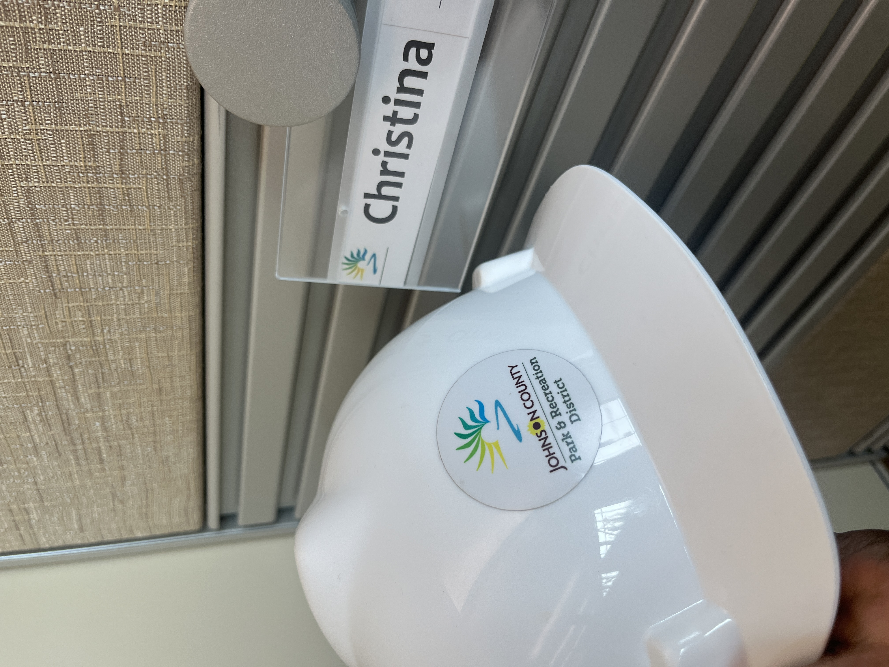

Playground Site Suitability Analysis
Overview
During my internship with the Johnson County Parks and Recreation District (JCPRD), I conducted a spatial suitability analysis to evaluate and prioritize 20 potential locations for new playground infrastructure across existing park properties. Using ArcGIS Pro, the project integrated demographic modeling, network analysis, and multi-modal transit accessibility to ensure equitable community access.
Your cover photo will appear here
images/nametag.JPG

Methodology & Spatial Modeling
Proximity & Demographic Apportionment
I generated 1-, 2-, and 3-mile radial buffers around the 20 candidate sites to model spatial catchment areas. These buffers were intersected with school enrollment data to estimate youth population density within each service radius.
Regional Drive-Time Analysis
JCPRD properties span 5 distinct administrative regions, with the highest asset concentration in the region closest to the Kansas City urban core. To evaluate accessibility more accurately than straight-line distance, I performed a network-based drive-time analysis across all 5 regions.
Multi-Modal Transit Integration
The final phase evaluated public transit and active transportation equity using RideKC network data. By incorporating transit routes, bike lanes, and pedestrian walksheds, the analysis mapped public transit connectivity to identify locations where infrastructure investments would best serve transit-dependent families.